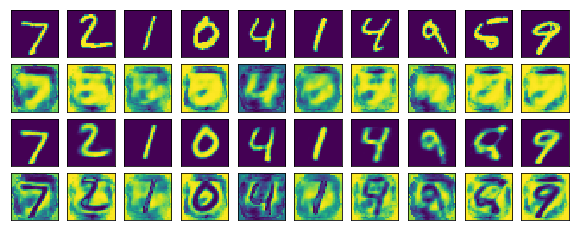
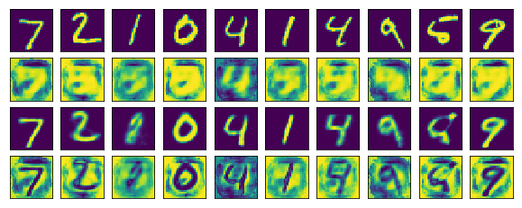
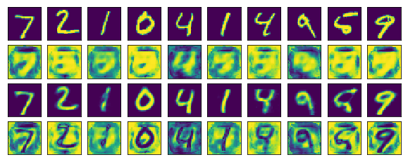
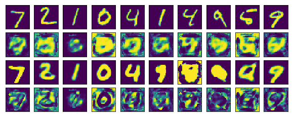
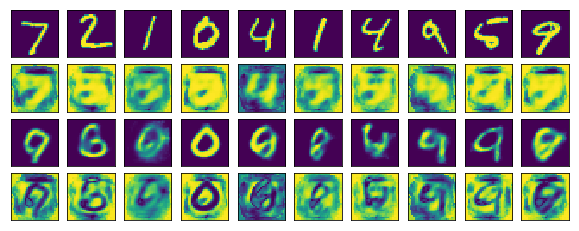
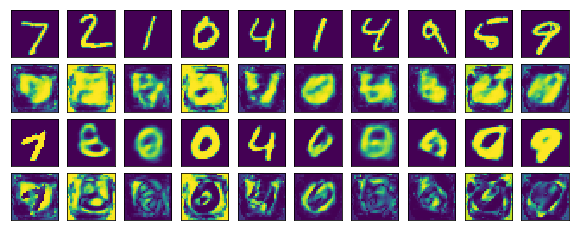
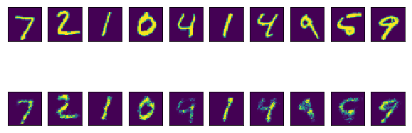
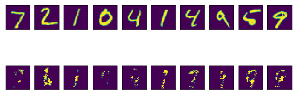

Adding noise to the activations
Gaussian noise with 0 mean and a standard deviation of 1 is added to the activations of E1, E2, and D1 in only the first pass (figure 1), only the second
pass (figure 2), and in both passes (figure 3):



The same is repeated with a standard deviation of 5:



To compare, corrupting the activations of a standard autoencoder results in the following:
std = 1.0

std = 5.0
